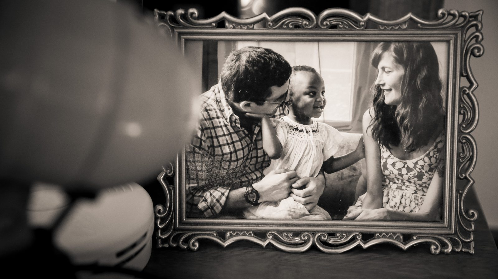
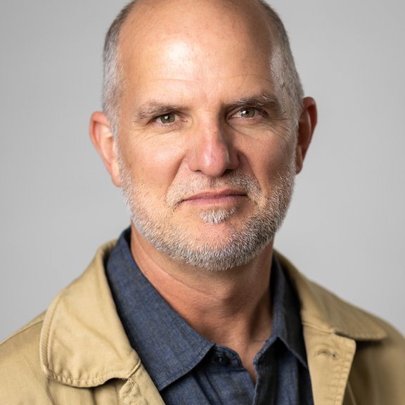
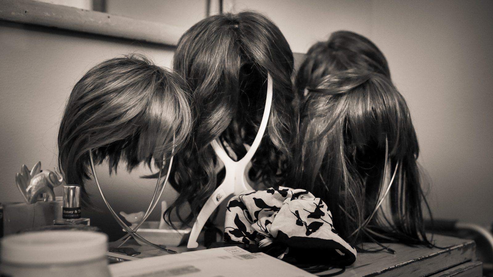

The Film
About Emily Hope
Emily Hope is an intimate vérité documentary about a mother racing against time to prepare her young adopted daughter for a future without her. Tender and unflinching, the film explores love, grief, resilience, and the quiet courage of telling a child the truth.
Synopsis
Seven years ago, Ben Garvin set out to make a film about green burial, an intimate, natural alternative to conventional death care. That search led him to Emily Hope Hofher, a Minneapolis mother living with terminal illness. When he asked why she had agreed to talk with him, she answered simply: “Because everybody’s gonna die. And how you die and how you’re celebrated in the end, I think it really matters.”
Emily was facing an impossible question: how do you prepare your young daughter for a life without you? As filming continued, the story became less about dying and more about parenting, love, honesty, and the courage required to tell the truth.
Filmed intimately over several years, Emily Hope follows Emily, her adopted daughter Ruby and her husband Rob through ordinary days at home, a visit with Ruby’s birth family, and the home vigil and green burial Emily designed for herself. It is a film about facing death honestly and living fully.

Directors’ statement
When we asked Emily why she was letting us into her life, she put it simply: “Everybody’s gonna die, and I want there to be an audience that scratches their chin.”
This film began as a way to understand green burial. But after Ben met Emily seven years ago, it quickly became clear her story was about something much bigger. Emily Hope is ultimately less about dying than it is about parenting, love, and the courage required to tell the truth.
We are deeply grateful to Emily, Ruby and Rob for trusting us with their story. We hope the film creates space for families to talk more openly about death and grief, and about what it means to prepare the people we love for a life without us.
— Ben Garvin and Lindsey Seavert
The filmmakers

Ben Garvin
Director, Cinematographer
Ben Garvin is a Minneapolis-based documentary filmmaker and photojournalist with more than 30 years of experience telling intimate, human-centered stories. His work has earned multiple Emmys, Edward R. Murrow Awards and an Alfred I. duPont–Columbia Award for Love Them First, which he co-directed with Lindsey Seavert. bengarvin.com
Lindsey Seavert
Director, Producer
Lindsey Seavert is an award-winning documentary filmmaker, producer and writer with more than two decades of experience in journalism and storytelling. Her work centers on illuminating untold stories with authenticity and heart. She co-directed Love Them First with Ben Garvin, winner of the Alfred I. duPont–Columbia Award. seavertstudios.com
Renny McCauley
Editor, Story Producer
Renny McCauley is a longtime editor whose documentary work has streamed on PBS, Netflix and Amazon Prime and screened at film festivals around the world. He brings a thoughtful, creative approach to shaping character-driven stories. rennymccauley.com
Credits
| Directed by | Ben Garvin, Lindsey Seavert |
|---|---|
| Produced by | Lindsey Seavert |
| Cinematography | Ben Garvin |
| Editor and story producer | Renny McCauley |
| Animation | Squawk Productions |
| Original score | Andy Thompson |
| Production company | Tiny Window Pictures |
| Fiscal sponsor | FilmNorth |
